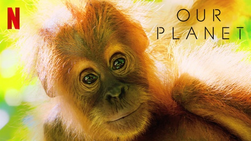
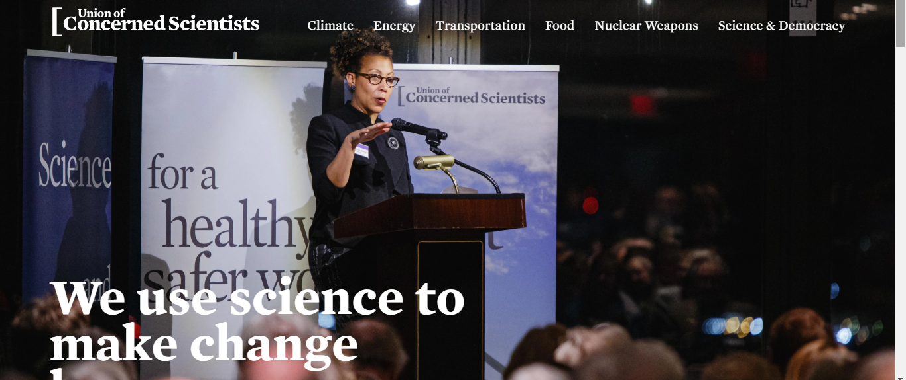
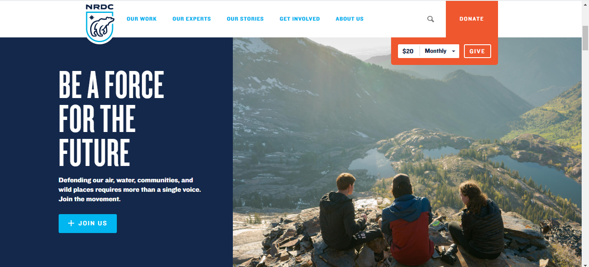

LEARN ABOUT OUR EARTH
1.
EARTH

Earth is a 2007 nature documentary film which depicts the diversity of wild habitats and creatures across the planet. The film begins in the Arctic in January of one year and moves southward, concluding in Antarctica in the December of the same year. Along the way, it features the journeys made by three particular species—the polar bear, African bush elephant and humpback whale—to highlight the threats to their survival in the face of rapid environmental change. A companion piece to the 2006 BBC/Discovery television series Planet Earth, the film uses many of the same sequences, though most are edited differently, and features previously unseen footage.
2. PLANET
EARTH I

Planet Earth is a 2006 British television series produced by the BBC Natural History Unit. Five years in the making, it was the most expensive nature documentary series ever commissioned by the BBC and also the first to be filmed in high definition.[1] The series received multiple awards, including four Emmy Awards, a Peabody Award, and an award from the Royal Television Society.
Planet Earth premiered on 5 March 2006 in the United Kingdom on BBC One, and by June 2007 had been shown in 130 countries. The original version was narrated by David Attenborough, whilst some international versions used alternative narrators.
3.
OUR
EARTH

Our Planet is a British nature documentary series made for Netflix. The series is narrated by David Attenborough and produced by Silverback Films, led by Alastair Fothergill and Keith Scholey, who also created BBC documentary series Planet Earth, Frozen Plan The series addresses issues of conservation while featuring these disparate animals in their respective home regions, and has been noted for its greater focus on humans' impact on the environment than traditional nature documentaries.
centering around how climate change impacts all living creatures.
4. PLANET EARTH II

From the frozen tundra in the north to the dry forests of the equator, Sir David Attenborough narrates a compelling view of the planet. "Planet Earth" was the first natural history documentary to be filmed in high definition, and now a decade later improved technology has made it possible to capture further details, from elusive animal behaviors to previously inaccessible remote landscapes. In addition to exploring the wilderness, the series examines urban dwellings, focusing on animals that have adapted to city life.
1.
USCA

The Union of Concerned Scientists (UCS) is a nonprofit science advocacy organization based in the United States. The UCS membership includes many private citizens in addition to professional scientists. Anne Kapuscinski, Sherman Fairchild professor of sustainability science in the Environmental Studies Program at Dartmouth College, currently chairs the UCS Board of Directors, having replaced James J. McCarthy, Professor of Biological Oceanography at Harvard University and past president of the American Association for the Advancement of Science in 2015.
2.
FRIENDS
OF EARTH

Friends of the Earth International (FoEI) is an international network of environmental organizations in 74 countries.
Friends of the Earth was founded in 1969 in San Francisco by David Brower, Donald Aitken and Gary Soucie after Brower's split with the Sierra Clubdue to the latter's positive approach to nuclear energy. The founding donation of $500,000 (in 2019 USD) was provided by Robert Orville Anderson, the owner of Atlantic Richfield oil company.
It became an international network of organisations in 1971 with a meeting of representatives from four countries, namely U.S., Sweden, the UK and France.
3.
NRDC

The NRDC was founded in 1970.Its establishment was partially an outgrowth of the Scenic Hudson Preservation Conference v. Federal Power Commission,
the Storm King case. The case centered on Con Ed's plan to build the world's largest hydroelectric facility at Storm King Mountain. The proposed
facility would have pumped vast amounts of water from the Hudson River to a reservoir and released it through turbines to generate electricity at peak
demand. A dozen concerned citizens organized the Scenic Hudson Preservation Conference in opposition to the project.
4.
EARTH JUSTIC

The organization was founded in 1971 as the Sierra Club Legal Defense Fund, though it was fully independent from the Sierra Club.
It changed its name to Earthjustice in 1997 to better reflect its role as a legal advocate representing hundreds of regional, national and international
organizations. As of September 2018, the group has provided free legal representation to more than 1,000 clients ranging from the Sierra Club, World Wildlife Fund.